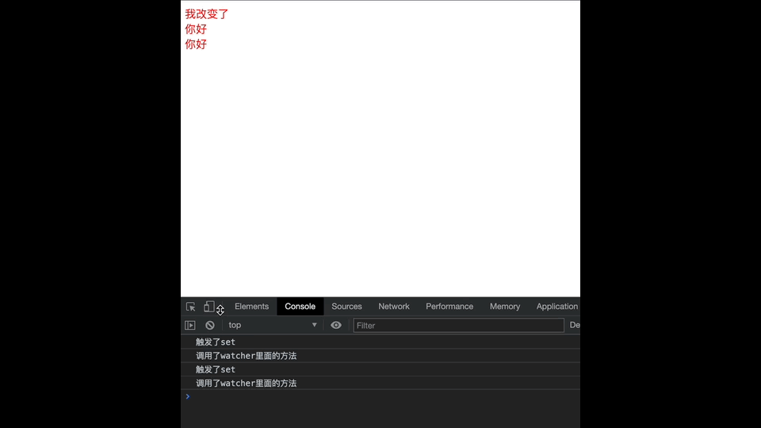
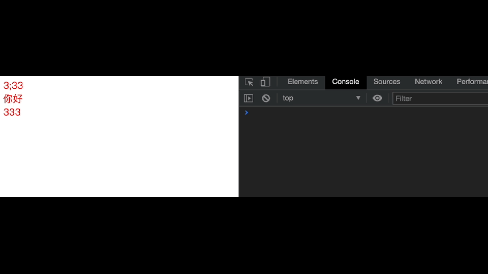

Vue源码开发-批量更新06
Vue源码开发-批量更新
1 | 1. 我们前面已经知道了 每个属性都会对应一个dep实例 而每个dep实例都会有一个watcher 这个watcher 是渲染用的 |
1 | <body> |
1 | 1. 我们上面可以看到 我们改变了 product 和 list 数据 |

异步更新 批量更新
1 | 1. 首先我们要明确 如果你多次改变data中的数据 我们更新视图的操作应该只执行一次 |
1 | <body> |
1 | 1. 这里我们知道 我们更新的时候 是调用watcher里的方法去更新 |
1 | import { popTarget, pushTarget } from "./dep" |
1 | // observe / schedular.js |
存在问题
1 | 1. 通过上面的代码 我们已经实现了异步更新 |
1 | <body> |
1 | 1. 我们打印出来可以看到 拿到的还是之前的DOM元素 |

$nextTick方法
1 | 1. 所以这里我们就要采用这种$nextTick 去拿到最新的DOM |
1 | 1. 所以我们刚刚的异步更新是采用定时器的方法 定时器是宏任务 这里我们采用promise的方法 |
1 | // observe / schedular.js |
1 | // 2021 0218 |
总结
1 | 1. 首先我们知道 我们每改变一次 data中的数据的时候 就会调用watcher中一次更新的方法 就会重新渲染页面 |


公告
感谢访问本站，如喜欢请收藏。本站主要分享前端知识，立志成为资深前端工程师，但目前是一个前端界的小学生 若喜欢可以打赏请博主喝一杯冰阔落
另外请大家多多支持淼哥的开源项目
https://github.com/flipped-aurora/gin-vue-admin
🌟🌟欢迎大家start 🌟🌟
欢迎加入博主的前端技术交流群